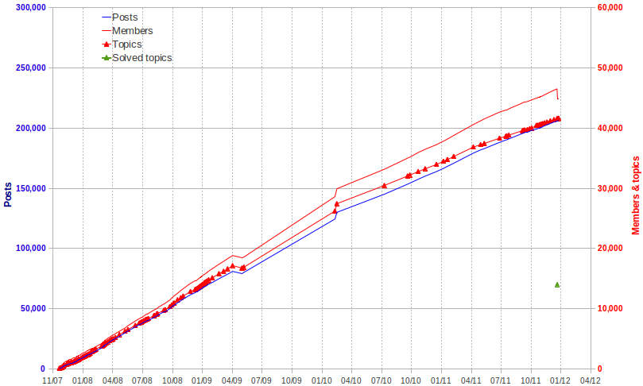

After 4 years of existence, the Community Forum has moved on the Apache Software Foundation (ASF) servers at the end of October 2011 (see details).
Here are some figures about how we are doing on the English forum. We will try to make this kind of report on a monthly basis in the forum and perhaps quarterly on the blog.
Please remember that the forum is managed by a group of users helping other users for free and on their spare time.
Some basics:
- The number of posts, members and topics is taken from the phpBB information bottom of main index page
- Solved topics are counted in all the forums except admin and archives sections (not visible to standard users)
- Note that the ratio solved topics vs. total topics is slightly biased since the topics in the archives and admin sections are counted (in phpBB statistics) but not the solved ones (custom search). However, there are less than 550 topics there (in more than a 40,000 grand total, so less than 1.5%). These last figures shouldn't change very much since the private sections are not very active.
Here it is (since the solved topics is a new metric, there is only one point for the moment).

The blue line (number of posts) is not that important, it just shows that the trend is consistent with the other metrics. The most interesting statistics are the red lines for the members and
the topics (with triangles, giving the time when the figures have been
recorded). Note that the ratio topics vs. members is 0.9 for the English
forum and above 1.5 for the French and Japanese forums. We tend not to
be too harsh for the rules on the English section and topics are not
often split when different users ask questions (still related of course)
in the same thread.
Activity has a slightly higher slope during the first 2 years. It may be
linked to the building of the knowledge database. Once the main issues
and common questions have been discussed, users find their answers more
and more easily with a mere search, hence less topics needed.
Neither the release of LibreOffice (Oct 2010), nor the move to the ASF
servers (Oct 2011) have changed anything for the activity.
The decrease in the number of members (end of 2011) is linked to the
cleaning of banned users. They had just been banned until now but to
keep only the "real users", their account has been deleted (nearly
1800). This was the first cleaning ever done from the launch of this
forum 4 years ago. 1550 of them had been identified as spammers because
of their post(s). 250 were passive spam (link in signature or interest
field of the profile, without any post).
The ratio of the solved topics is rather good: 14,000 solved (green
triangle) in 41,000 (red triangles), that makes more than 1 in 3 (all
users don't bother to tag their topic as solved).
For the record, last quarter has been in line with the rest: 2100 new
users from Oct 1st to end of this year, meaning 1800 new topics.
As for the spam, we have had 1800 users in 1500 days, it makes 1.21
spammer a day, still rather low, thanks to the registration process
(hard to cheat for bots).
Last figures: 2011 has shown an increase in the max number of online
users along the months. Peak reached 232 beginning of October. The
counter has been reset on Jan 1st 2012 and is already at 214, proving
the audience is still there.
Some words about the team. Let's not forget Terry Ellison who was the
main maintainer of the forum until the move to Apache Software
Foundation servers. His huge involvement has made it possible for both a
clean running of the forum during 4 years, making it a great place for
those needing/providing help, and contributing to the transfer of the
forum to the ASF servers with a minimal impact for the users.
Hagar Delest,
On the behalf of the Forum Volunteers